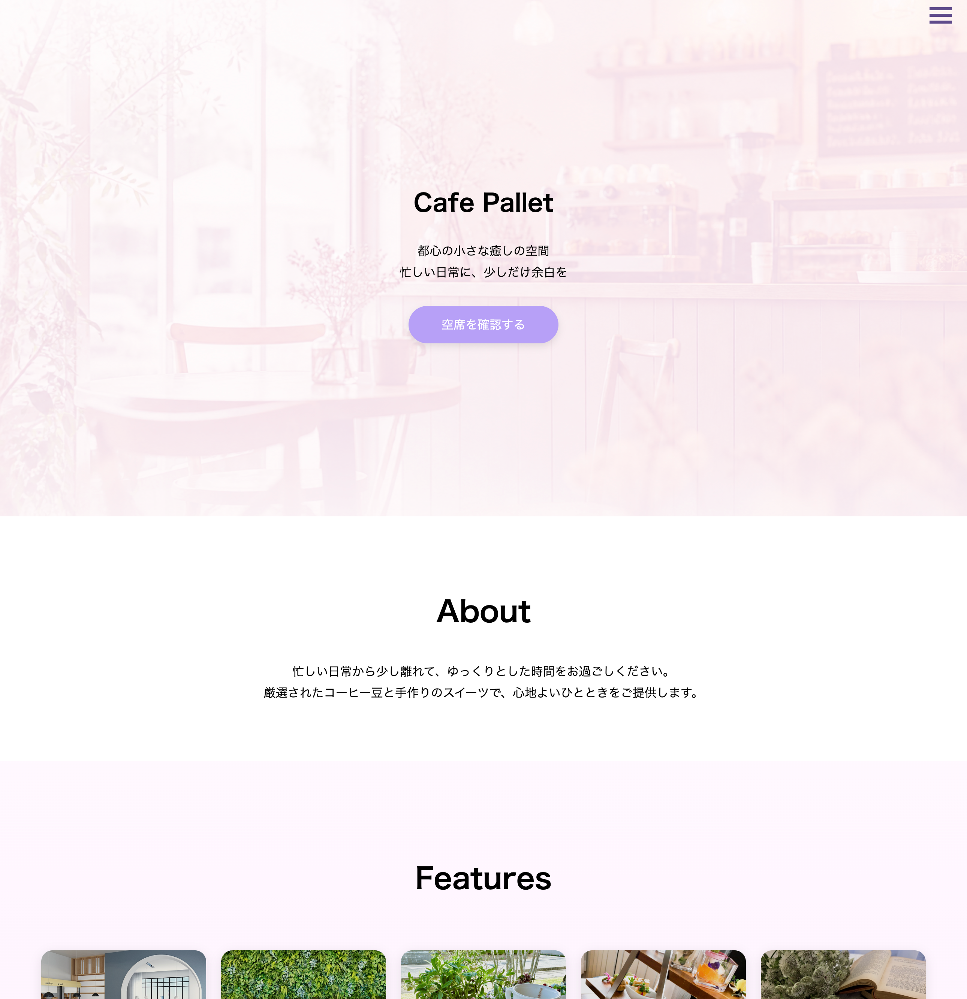

"使いやすさ"を意識した
Webサイト制作
HTML/CSS/JavaScriptを用いて、
スマホ対応を重視した
Webサイトを制作しています

About
Profile
情報系高校でITやデザインを学習後、
現在は経営学を学びながらWeb制作を行なっています。
見た目だけではなく、
"使いやすさ"や"導線設計"を意識した
サイト制作を心がけています。
ユーザーが迷わず行動できる
UI/UX設計を意識しています。
Information
- 情報系高校卒業
- 経営学部在学中
- HTML/CSS/JavaScript学習中
- レスポンシブ対応可能
- ITパスポート、基本情報取得済
Skills
HTML/CSS
- レスポンシブ対応
- Flexbox
- レイアウト設計
- LP制作可能
JavaScript
- ハンバーガーメニュー
- フェードイン
- DOM操作
Design
- Figma
- UI/UX設計
- 導線設計
Works
Strength
1
スマホ対応を意識した設計
レスポンシブデザインを基本とし、あらゆるデバイスで快適な閲覧体験を提供します。
2
導線を考えたUI/UX
ユーザーの行動を想定し、目的達成までの導線を分かりやすく設計します。
3
丁寧な修正対応
フィードバックに対して迅速かつ丁寧に対応し、理想のサイトを実現します。
Contact
お仕事のご依頼・ご相談は
以下からお気軽にお問い合わせください。